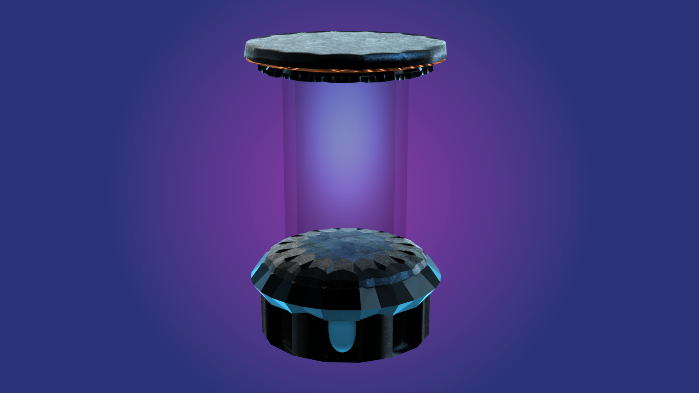
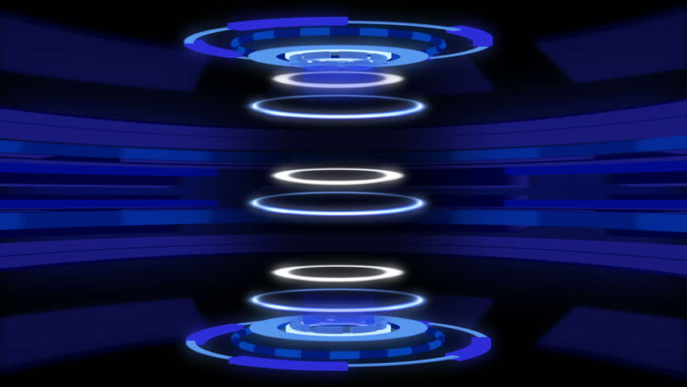

La téléportation est l’action de dématérialiser un corps et de le ré-matérialiser dans un autre lieu géographique. Pour ce faire, il faut que le coprs dématérialisé soit convertit, grâce à une machine en une information numérique, puis qu’une autre machine interprète cette information pour reconstituer l’objet initial.
Notre société ADT est experte en engin télé-portatifs et nous vous proposons en exclusivité mondiale de réservez votre télé-porteur, qui vous seras envoyez dès la seconde dans l’un de nos point relais, proche de chez vous.
 